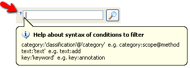

FilteringFiltering
FilteringFiltering
The filtering system is based on the metainformation the the refactorings own such as its name, description, motivation, keywords or categories. It allows to remark the refactorings that fulfill some requisites and hide the rest. The filtering conditons that the user has created are always shown so the user can always know what filters he has applied. The filterings can be removed or enabled through the Classification Panel.
The different fields that can be used to filter the refactorings are: categories, text and keywords.
The syntax for each field is the following:
The syntax for creating filters is a bit complex and not too intuitive, that's why the plugin offers help to the user. To make the help visible the user has to click on the text field of the search and then click on the question mark that appears on its left or press F1. When the user does each one of them the help it's shown as a popup.
